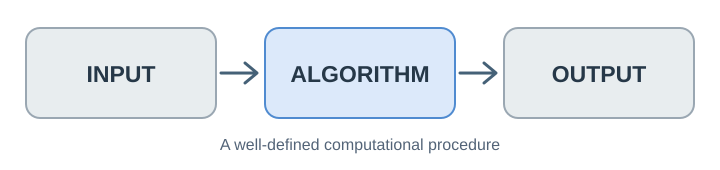
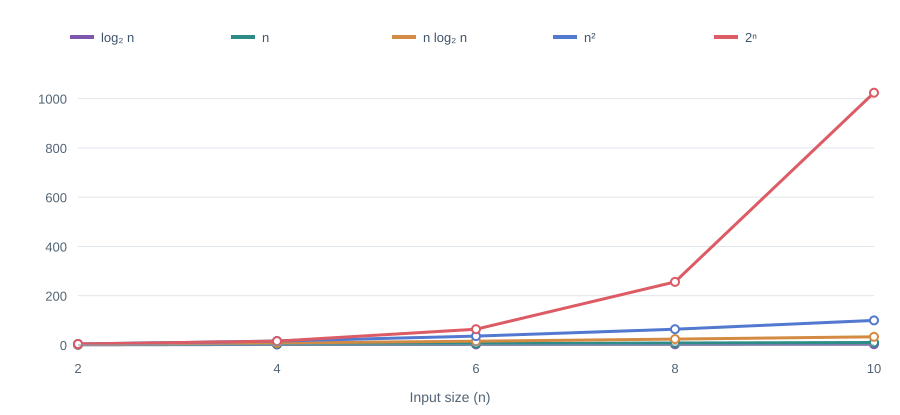
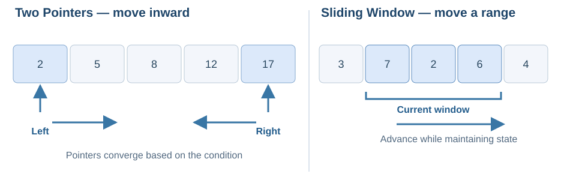
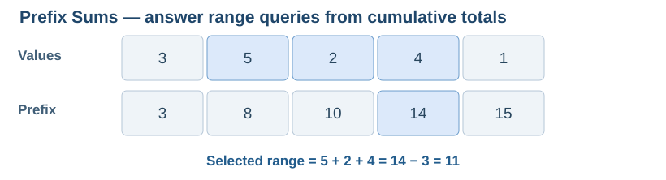
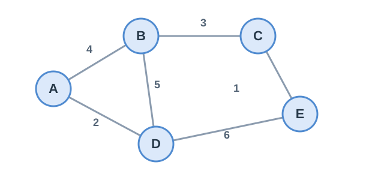
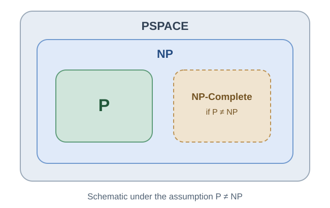

An algorithm is a finite, well-defined sequence of computational steps designed to solve a problem or perform a task.
Algorithms form the foundation of computer science. They are used in everything from searching and sorting to database engines, operating systems, distributed systems, artificial intelligence, cryptography, networking, and large-scale optimization.
This guide presents a comprehensive, top-level understanding of algorithms, focusing on what they are, how they work, how they are classified, when different approaches are useful, and how their performance is evaluated.
What is an algorithm?
An algorithm transforms an input into an output by applying a precisely defined procedure.

Example: Given a collection of customer records, an algorithm might find a particular customer, sort all customers by age, detect duplicate records, or calculate the shortest delivery route.
Essential properties
Strictly speaking, some practical procedures are intentionally continuous, such as server event loops and monitoring processes. These can still be algorithmic systems even though the overall process does not terminate.
Algorithm vs data structure vs program
| Concept | Purpose | Example |
|---|---|---|
| Algorithm | Defines how to solve a problem | Binary Search |
| Data structure | Organizes and stores information | Array, Hash Table, B-Tree |
| Program | Implements algorithms using a programming language | Search functionality in a Java application |
| Abstract Data Type (ADT) | Defines supported operations and behavior | Map, Queue, Set |
| Heuristic | Provides a practical rule without universal optimality guarantees | Always process the nearest delivery first |
Important: A data structure and an algorithm are not the same thing, but they strongly influence each other. An algorithm's efficiency often depends on the underlying data structure.
There is no single universal classification. Algorithms can be categorized independently along several dimensions.
| Classification dimension | Main categories |
|---|---|
| By purpose | Searching, Sorting, Graph, String, Optimization, Numerical |
| By design technique | Brute Force, Divide and Conquer, Greedy, Dynamic Programming |
| By practical problem-solving pattern | Two Pointers, Sliding Window, Prefix Sum, Monotonic Stack, Binary Search on Answer, Merge Intervals, Union-Find |
| By execution behavior | Iterative, Recursive, Parallel, Distributed |
| By result guarantee | Exact, Approximation, Heuristic |
| By randomness | Deterministic, Randomized |
| By input availability | Offline, Online, Streaming |
| By storage model | In-Memory, External-Memory |
| By execution environment | Sequential, Concurrent, Distributed |
| By underlying computation | Classical, Probabilistic, Quantum |
These categories overlap.
For example, Merge Sort is simultaneously a sorting algorithm, a divide-and-conquer algorithm, a deterministic algorithm, and typically an offline algorithm.
Algorithm analysis determines how efficiently an algorithm uses computational resources as its input grows.
Main performance measures
| Measure | Description |
|---|---|
| Time complexity | Growth in computational work |
| Space complexity | Growth in memory requirements |
| I/O complexity | Number of data transfers between storage levels |
| Communication complexity | Amount of information exchanged between computing nodes |
| Work complexity | Total operations performed, especially in parallel algorithms |
| Span / depth | Longest chain of dependent operations |
| Energy complexity | Computational energy consumption |
The two most fundamental measures are time complexity and space complexity.
Asymptotic notation
| Notation | Meaning |
|---|---|
| O(f(n)) | Asymptotic upper bound |
| Ω(f(n)) | Asymptotic lower bound |
| Θ(f(n)) | Asymptotically tight bound |
| o(f(n)) | Strictly smaller asymptotic growth |
| ω(f(n)) | Strictly larger asymptotic growth |
Big O is often used informally to describe growth rates, but mathematically it means an upper bound, not necessarily the exact running time or worst-case scenario.
Common time complexity classes
| Complexity | Name | Typical example |
|---|---|---|
| O(1) | Constant | Array indexing |
| O(log n) | Logarithmic | Binary Search |
| O(n) | Linear | Linear Search |
| O(n log n) | Linearithmic | Merge Sort |
| O(n²) | Quadratic | Bubble Sort |
| O(n³) | Cubic | Basic matrix multiplication |
| O(2ⁿ) | Exponential | Enumerating all subsets |
| O(n!) | Factorial | Enumerating all permutations |
Growth of common complexity classes
Illustrative relative operation counts for small n — lower is better

Growth is illustrative, not a benchmark. Actual runtime depends on hardware, constants, data, and implementation.
Cases of complexity analysis
| Case | Interpretation |
|---|---|
| Best case | Minimum work for inputs of a given size |
| Average case | Expected work under a specified input distribution |
| Worst case | Maximum work for inputs of a given size |
| Amortized | Average cost per operation across a sequence, without requiring a probability distribution |
| Expected | Average cost over an explicitly defined source of randomness |
For example, a hash table can offer expected constant-time lookups, even though individual operations may take much longer because of collisions.
Time-space tradeoff
Algorithms frequently exchange memory for speed.
The fastest algorithm is not always the best algorithm. Memory, network usage, latency, throughput, reliability, and implementation complexity can matter equally.
These are general problem-solving techniques used to design algorithms across many domains.
| Paradigm | Core idea | Representative algorithms/problems |
|---|---|---|
| Brute Force | Try candidate solutions directly | Exhaustive search |
| Divide and Conquer | Divide into independent subproblems, solve and combine | Merge Sort, Quick Sort |
| Decrease and Conquer | Reduce to a smaller instance | Binary Search |
| Transform and Conquer | Transform problem into an easier representation | Heap Sort, reductions |
| Greedy | Make a locally optimal choice at each step | Kruskal, Prim, Huffman Coding |
| Dynamic Programming | Reuse solutions to overlapping subproblems | Knapsack, Edit Distance |
| Backtracking | Explore possibilities and abandon invalid paths | N-Queens, Sudoku |
| Branch and Bound | Prune branches using bounds on the optimal solution | Exact Traveling Salesperson |
| Randomized | Use randomness as part of computation | Randomized Quick Sort |
| Approximation | Produce solutions with provable quality bounds | Approximate Set Cover |
| Heuristic | Use practical rules to find good solutions | Nearest-neighbor routing |
| Metaheuristic | Use general search strategies to explore large solution spaces | Genetic Algorithms, Simulated Annealing |
Brute force
Explores possible candidates without relying on sophisticated problem-specific optimization.
Advantages: Simple, broadly applicable, and useful as a correctness baseline.
Disadvantages: Often computationally expensive, especially for combinatorial problems.
Divide and conquer
Divides a large problem into smaller, usually independent problems, solves them recursively, then combines the results.
Typical stages:
It is effective when a problem has a useful recursive structure and the subproblems can be handled efficiently.
Greedy algorithms
Choose the best available option at each step without generally reconsidering previous decisions.
Greedy methods are efficient when the problem has the required mathematical structure, particularly a valid greedy-choice property.
Important: Making locally optimal decisions does not guarantee a globally optimal solution for every problem.
Dynamic programming
Breaks a problem into overlapping subproblems and stores intermediate solutions.
Two primary approaches:
Dynamic programming is especially useful when problems exhibit optimal substructure and repeated subproblems.
Backtracking vs branch and bound
Both systematically explore a solution space.
Backtracking primarily prunes decisions that violate constraints or cannot lead to valid solutions.
Branch and bound primarily uses bounds to discard candidates that cannot improve on the best solution already found.
They are often combined in optimization algorithms.
Randomized algorithms
Use random choices to influence execution or outcomes.
| Type | Guarantee |
|---|---|
| Las Vegas | Always correct, with randomized running time |
| Monte Carlo | Usually has bounded running time but may have a controlled probability of error |
Randomized methods are common in sampling, hashing, approximate counting, optimization, and large-scale data processing.
Approximation and heuristic algorithms
An approximation algorithm provides a mathematically defined guarantee about how close its solution is to optimal.
A heuristic aims to find useful solutions efficiently but generally provides no universal guarantee.
Metaheuristics such as genetic algorithms, tabu search, and simulated annealing provide reusable search strategies for difficult optimization landscapes.
Broad design paradigms such as divide and conquer and dynamic programming describe how an algorithm is constructed. Problem-solving patterns are more specific, reusable ways to organize pointers, scans, intermediate state, data structures, or searches. A single algorithm can combine multiple patterns.
These patterns are especially useful for array and string problems, coding interviews, online data processing, database-style range queries, graph traversal, and high-performance application logic. The following is a conceptual guide, without code examples.
Two Pointers
Basic idea: Maintain two positions in a sequence and move one or both according to a rule, avoiding repeated scanning of the same elements.
| Variant | How it works | Typical use | Typical cost |
|---|---|---|---|
| Opposite-direction pointers | Start at opposite ends and move inward. | Pair search in sorted data, palindrome checks, sorted-array partitioning. | O(n) for one pass. |
| Same-direction pointers | Both move forward, often serving as read and write positions. | In-place compaction, removing adjacent duplicates, merging scans. | O(n) for one pass. |
| Fast and slow pointers | Pointers advance at different rates. | Linked-list cycle detection, finding the middle of a list, locating cycles. | Often O(n) time and O(1) extra space. |
| Two sorted streams | Track positions in two separately ordered inputs. | Sorted merge, intersection of sorted arrays, merge joins. | O(n + m) for full traversal. |

Two Pointers generally tracks two positions; Sliding Window maintains a contiguous interval and a property of that interval. The techniques can overlap.
Sliding Window
Basic idea: Maintain information about a contiguous range while moving its boundaries forward. Rather than recomputing every range from scratch, update the running sum, frequency map, count, or another maintained property as elements enter or leave.
| Variant | Typical problem | Key requirement | Typical cost |
|---|---|---|---|
| Fixed-size window | Maximum sum or average of every consecutive k-element group. | The window length remains k. | Often O(n). |
| Variable-size window | Longest or shortest contiguous range meeting a condition. | The condition must permit safe boundary adjustment; monotonic behavior is commonly used. | Often O(n) with monotone pointer movement. |
| Frequency-based window | Longest substring without repeated characters; bounded distinct values. | Maintain element counts as endpoints change. | Often O(n) with appropriate map operations. |
| Window with monotonic deque | Minimum or maximum in every k-element window. | Maintain candidates in a monotonic order. | O(n) amortized for the full sequence. |
Recognize it when: The question asks about contiguous subarrays, substrings, consecutive time intervals, longest valid ranges, or fixed-length rolling statistics. It is not automatically applicable to arbitrary subsets or non-monotone constraints.
Prefix Sums and Difference Arrays
| Technique | Core idea | Best suited for | Typical cost |
|---|---|---|---|
| Prefix Sum | Precompute cumulative totals so a range sum is the difference of two prefix values. | Many static range-sum queries. | O(n) preprocessing, O(1) per range query. |
| 2D Prefix Sum | Precompute cumulative sums over a rectangular grid. | Repeated rectangle-sum queries in matrices. | O(rows × cols) preprocessing, O(1) per query. |
| Prefix XOR / Prefix Counts | Store cumulative XOR values or frequency counts. | Range XOR, parity, letter-count, and counting queries. | Often O(n) preprocessing; query cost depends on representation. |
| Difference Array | Record boundary changes to represent many interval additions compactly. | Batch range updates, followed by reconstruction. | Often O(1) per update, O(n) reconstruction. |
| Prefix Sum + Hash Map | Track previously seen prefix aggregates. | Counting subarrays with a target sum or property. | Often expected O(n). |

A prefix sum transforms repeated additions over a static range into constant-time arithmetic using cumulative values.
Monotonic Stack and Monotonic Queue
Monotonic stack: Maintains elements or indices in increasing or decreasing order. When a new element violates that order, obsolete elements are removed. It is useful for next greater/smaller element, stock span, histogram rectangles, and boundary detection.
Monotonic queue/deque: Maintains ordered candidates while also removing expired elements. It is useful for sliding-window minimum/maximum and some dynamic programming optimizations.
Under the standard push-once/pop-once setup, these patterns often run in O(n) amortized time, even though one step may remove many elements.
Binary Search on Answer, Ordering, and Selection
| Pattern | Core idea | Typical use |
|---|---|---|
| Binary Search on Answer | Turn optimization into a monotone feasibility question and binary search the boundary. | Minimum capacity, earliest feasible time, maximum achievable threshold. |
| Sort + Scan | Sort by a relevant key, then make one pass using ordering. | Duplicate detection, grouping, scheduling, interval problems. |
| Merge Intervals | Sort intervals and combine overlaps while scanning. | Calendar conflicts, occupied time spans, overlapping ranges. |
| Sweep Line | Order event boundaries and update active information as a line or time advances. | Overlaps, geometric intersections, concurrent event counts. |
| Quickselect / Partition Selection | Partition around a pivot to locate an order statistic without fully sorting. | kth-smallest value, median selection. |
| Heap / Top-K | Maintain the best k candidates in a heap. | Top scores, nearest candidates, streaming top-k. |
| Cyclic Placement / Index Mapping | Use a bounded value-to-position relation to place or inspect items. | Missing/duplicate numbers in constrained integer ranges. |
| Coordinate Compression | Map sparse ordered values to a compact index domain while preserving relative order. | Fenwick Trees, Segment Trees, offline queries. |
Key caution: Binary Search on Answer requires a valid monotonic feasibility property; sorting changes original ordering, so it may require tracking original indices.
Hashing, Counting, and Linear-Time Optimization
| Pattern | Core idea | Typical use |
|---|---|---|
| Frequency Map / Counting | Maintain occurrences of values or symbols. | Anagrams, duplicates, majority-like properties. |
| Hash Map for Complements | Remember values already seen to identify a needed counterpart. | Pair-sum and matching constraints. |
| Kadane's Algorithm | Maintain the best subarray ending at the current position, then the best overall. | Maximum-sum contiguous subarray in O(n). |
| Running Aggregate | Incrementally update sum, min, max, counts, or other mergeable state. | Stream statistics and single-pass calculations. |
| Rolling Hash | Update a hash as a fixed-length subsequence shifts by one position. | Substring search and deduplication candidates; verify matches if collisions matter. |
| Bitmask / Bitset Technique | Represent small sets or flags compactly using bits. | Subset states, membership flags, Boolean set operations. |
| Meet in the Middle | Split a combinatorial search into two halves and combine their results. | Subset sums and searches where full enumeration is too large. |
Graph, Tree, and Range-Query Patterns
| Pattern | Core idea | Typical use |
|---|---|---|
| BFS / Level-by-Level Traversal | Explore neighbors in increasing hop-distance order. | Unweighted shortest paths, minimum number of steps. |
| Multi-Source BFS | Start the traversal from many sources simultaneously. | Distance to the nearest source, propagation problems. |
| DFS / Recursive Exploration | Follow one branch deeply before backtracking. | Connected components, cycle detection, tree traversal. |
| Union-Find (Disjoint Set Union) | Merge equivalence groups and test whether two items share a group. | Connectivity, Kruskal's MST, dynamic grouping. |
| Topological Processing | Process directed acyclic graphs in dependency-respecting order. | Build order, dependency scheduling, DAG dynamic programming. |
| Tree Traversal / Euler Tour | Translate tree structure into a traversal or flattened interval. | Subtree queries, ancestor relationships. |
| Binary Lifting | Precompute jumps of powers of two along a tree or functional graph. | Ancestors and lowest-common-ancestor queries. |
| Fenwick Tree / Segment Tree | Maintain aggregated information over changing ranges. | Dynamic prefix and range queries. |
| Trie / Prefix Tree | Follow shared prefixes of keys or sequences. | Autocomplete, prefix lookup, dictionary search. |
Dynamic Programming and Search-State Patterns
| Pattern | Core idea | Typical use |
|---|---|---|
| Memoization / State Caching | Cache subproblem answers keyed by state. | Repeated overlapping recursive subproblems. |
| Tabulation / State Transition | Fill states in dependency order using previously solved states. | Knapsack, sequence alignment, path counting. |
| Rolling Array / Space Optimization | Keep only state layers still needed for future transitions. | Dynamic programming with local dependencies. |
| Bitmask DP | Use bits to encode subsets in dynamic programming states. | Subset routing, assignment over small sets. |
| Backtracking with Pruning | Build candidates incrementally and abandon impossible partial choices. | Constraint satisfaction, permutations, combinations. |
| State-Space Search | Represent possible configurations as nodes and moves as edges. | Puzzles, transformations, search problems. |
Quick Pattern-Recognition Guide
| Problem clue | Patterns to investigate first |
|---|---|
| Sorted array; pair or palindrome | Two Pointers |
| Contiguous subarray or substring | Sliding Window, Prefix Sum, Kadane, Hash Map |
| Many static range-sum queries | Prefix Sum, 2D Prefix Sum |
| Many batch interval additions | Difference Array |
| Dynamic range sums or minima | Fenwick Tree, Segment Tree |
| Next greater/smaller; span | Monotonic Stack |
| Maximum/minimum in each moving window | Monotonic Deque |
| Minimum valid capacity or maximum feasible threshold | Binary Search on Answer |
| Overlapping ranges or events | Sort + Merge Intervals, Sweep Line |
| Top k or kth-ranked element | Heap / Top-K, Quickselect |
| Cycle or midpoint in a linked list | Fast and Slow Pointers |
| Dependencies, connectivity, or minimum hops | Topological Sort, Union-Find, BFS/DFS |
| Small subsets and repeated choices | Backtracking, Meet in the Middle, Bitmask DP |
| Common prefixes or multiple string searches | Trie, Rolling Hash, Pattern Matching |
Important distinction: These are recognition and implementation patterns, not guarantees. For example, Sliding Window and Two Pointers are often closely related; Greedy and Dynamic Programming are broader design paradigms; and Fenwick Tree and Trie are data structures that support particular algorithmic techniques.
This is the most important classification when studying algorithms by the kinds of problems they solve.
Searching algorithms
Searching algorithms locate elements, records, or values in a collection.
| Algorithm | Basic idea | Typical complexity |
|---|---|---|
| Linear Search | Examine elements sequentially | O(n) |
| Binary Search | Repeatedly halve a sorted search range | O(log n) |
| Jump Search | Jump in blocks, then search locally | O(√n) |
| Interpolation Search | Estimate position using value distribution | O(log log n) average under suitable assumptions |
| Exponential Search | Expand search range exponentially | O(log n) |
| Hash-based Search | Compute a hash to locate a key | Expected O(1) |
| Binary Search Tree | Navigate a tree using key comparisons | O(h), where h is tree height |
| B-Tree Search | Navigate a balanced multiway search tree | O(log n) |
| Trie Search | Follow characters or symbols through a prefix tree | O(L), for key length L |
Where used: Databases, indexes, dictionaries, search engines, caching systems, and in-memory collections.
Sorting algorithms
Sorting algorithms organize data in a specified order.
| Algorithm | Average time | Worst time | Stable? |
|---|---|---|---|
| Bubble Sort | O(n²) | O(n²) | Yes |
| Selection Sort | O(n²) | O(n²) | Typically no |
| Insertion Sort | O(n²) | O(n²) | Yes |
| Merge Sort | O(n log n) | O(n log n) | Yes |
| Quick Sort | O(n log n) | O(n²) | Typically no |
| Heap Sort | O(n log n) | O(n log n) | No |
| Counting Sort | O(n + k) | O(n + k) | Can be stable |
| Radix Sort | Depends on digits and underlying sort | Depends on implementation | Can be stable |
| Bucket Sort | Depends on distribution | Can be O(n²) | Depends |
| TimSort | O(n log n) | O(n log n) | Yes |
Here, k represents the value range in Counting Sort. Radix Sort commonly requires O(d(n + k)) work for d digit positions and radix k.
Important sorting characteristics:
For arbitrary comparison-based sorting, the worst-case comparison lower bound is Ω(n log n). Specialized sorting algorithms can avoid this bound when their assumptions permit.
Graph algorithms
Graph algorithms process relationships between entities.
A graph consists of vertices (nodes) and edges (connections).

Illustrative weighted, undirected graph. Nodes represent entities; edge labels represent weights such as distances or costs.
| Category | Major algorithms | Purpose |
|---|---|---|
| Traversal | BFS, DFS | Visit and explore graph vertices |
| Shortest Path | Dijkstra, Bellman-Ford, A*, Floyd-Warshall | Find minimum-cost paths |
| Minimum Spanning Tree | Prim, Kruskal, Borůvka | Connect vertices with minimum total edge weight |
| Topological Ordering | Kahn's Algorithm, DFS-based | Order tasks with dependencies |
| Connectivity | Tarjan, Kosaraju | Identify strongly connected components |
| Cycle Detection | DFS-based, Union-Find-based | Detect cycles |
| Network Flow | Ford-Fulkerson, Edmonds-Karp, Dinic | Maximize flow through a network |
| Matching | Hopcroft-Karp, Hungarian Algorithm | Match entities under constraints |
| Graph Coloring | Greedy coloring, exact coloring methods | Assign colors while respecting adjacency |
| Centrality / Ranking | PageRank, Betweenness Centrality | Identify important nodes |
| Graph Partitioning | Spectral methods, multilevel partitioning | Split graphs into useful groups |
Graph algorithms are fundamental to networking, routing, social networks, dependency resolution, scheduling, fraud detection, recommendation systems, and distributed systems.
String and text-processing algorithms
These algorithms analyze, search, compare, or transform sequences of characters or symbols.
| Category | Major algorithms |
|---|---|
| Exact Pattern Matching | Naive Matching, KMP, Rabin-Karp, Boyer-Moore |
| Multiple Pattern Matching | Aho-Corasick |
| Prefix Search | Trie-based algorithms |
| Suffix Processing | Suffix Arrays, Suffix Trees |
| String Similarity | Levenshtein Distance, Edit Distance |
| Longest Common Subsequence | Dynamic Programming methods |
| Longest Common Substring | Suffix-based and DP methods |
| Palindrome Detection | Manacher's Algorithm |
| Regular Expression Matching | Finite Automata, NFA/DFA-based approaches |
| Text Indexing | Inverted Index construction and lookup |
Applications: Search engines, text editors, autocomplete, plagiarism detection, bioinformatics, document processing, and language technologies.
Mathematical and numerical algorithms
These algorithms perform mathematical computation.
| Category | Examples |
|---|---|
| Number Theory | Euclidean Algorithm, Extended Euclidean Algorithm |
| Prime Number Algorithms | Sieve of Eratosthenes, Miller-Rabin |
| Modular Arithmetic | Modular Exponentiation, Modular Inverse |
| Matrix Algorithms | Gaussian Elimination, Strassen's Algorithm |
| Numerical Root Finding | Bisection Method, Newton-Raphson |
| Numerical Integration | Trapezoidal Rule, Simpson's Rule |
| Optimization | Gradient Descent, Newton's Method |
| Fourier Analysis | Fast Fourier Transform (FFT) |
| Linear Algebra | LU, QR, SVD Decompositions |
| Arbitrary-Precision Arithmetic | Large Integer Multiplication and Division |
These algorithms are especially important in scientific computing, machine learning, simulations, cryptography, graphics, and engineering.
Computational geometry algorithms
Operate on geometric objects such as points, lines, polygons, surfaces, and spatial regions.
| Problem | Representative algorithms |
|---|---|
| Convex Hull | Graham Scan, Jarvis March, Monotone Chain |
| Closest Pair of Points | Divide-and-Conquer Closest Pair |
| Line Segment Intersection | Sweep Line |
| Point-in-Polygon | Ray Casting, Winding Number |
| Spatial Searching | KD-Tree, R-Tree |
| Triangulation | Delaunay Triangulation |
| Geometric Partitioning | Voronoi Diagrams |
| Range Searching | Range Trees, Spatial Indexes |
Applications: GIS, map services, collision detection, robotics, computer graphics, and spatial databases.
Combinatorial optimization algorithms
These algorithms find an optimal arrangement, selection, or allocation from a large set of possibilities.
Typical problems include:
Common solving approaches include dynamic programming, greedy algorithms, branch and bound, integer linear programming, constraint programming, approximation, and metaheuristics.
Many of these problems are computationally difficult in their general forms, so practical systems often rely on approximations or heuristics.
Computational statistics and probabilistic algorithms
These algorithms handle randomness, uncertainty, statistical estimation, and probability distributions.
| Category | Examples |
|---|---|
| Random Sampling | Reservoir Sampling, Importance Sampling |
| Probabilistic Simulation | Monte Carlo Methods |
| Probabilistic Inference | Markov Chain Monte Carlo (MCMC) |
| Sequential Estimation | Kalman Filter, Particle Filter |
| Distribution Estimation | Kernel Density Estimation |
| Statistical Estimation | Maximum Likelihood, Bootstrap |
| Probabilistic Data Structures | Bloom Filter, Count-Min Sketch |
| Random Number Generation | Pseudorandom Number Generators |
Applications: Analytics, risk modeling, machine learning, financial simulation, monitoring, and approximate query processing.
Compression algorithms
Compression reduces the amount of information needed to represent data.
| Type | Algorithms | Characteristic |
|---|---|---|
| Lossless | Huffman Coding, LZ77, LZW, Arithmetic Coding | Original information can be recovered exactly |
| Lossy | Transform Coding, Quantization, Predictive Coding | Some information is discarded to reduce size |
Practical formats often combine several algorithms.
Applications: Data storage, network transmission, archives, images, audio, video, and database compression.
Cryptographic algorithms
Cryptographic algorithms protect information and support security properties.
| Category | Examples | Purpose |
|---|---|---|
| Symmetric Encryption | AES, ChaCha20 | Encrypt information using a shared secret |
| Asymmetric Cryptography | RSA, Elliptic-Curve Cryptography | Public-key encryption and related operations |
| Cryptographic Hashing | SHA-2, SHA-3 | Compute secure digests |
| Message Authentication | HMAC, Poly1305 | Verify message authenticity and integrity |
| Digital Signatures | RSA-PSS, ECDSA, EdDSA | Verify signed messages |
| Key Agreement | Diffie-Hellman, ECDH | Establish shared keys |
| Password Hashing / KDF | Argon2, scrypt, PBKDF2 | Derive keys and resist password guessing |
Cryptographic security must consider more than running time: mathematical assumptions, randomness, key management, side-channel resistance, and implementation correctness all matter.
Machine learning and artificial intelligence algorithms
These algorithms learn from data, perform inference, or search complex spaces.
| Category | Major approaches |
|---|---|
| Supervised Learning | Linear Regression, Logistic Regression, Decision Trees |
| Unsupervised Learning | K-Means, DBSCAN, Hierarchical Clustering |
| Ensemble Learning | Random Forests, Gradient Boosting |
| Neural Network Optimization | Backpropagation, SGD, Adam |
| Reinforcement Learning | Q-Learning, Policy Gradient Methods |
| Search and Planning | A*, Minimax, Monte Carlo Tree Search |
| Dimensionality Reduction | PCA, t-SNE, UMAP |
| Nearest-Neighbor Search | KNN, HNSW, Locality-Sensitive Hashing |
| Probabilistic Models | Hidden Markov Models, Bayesian Networks |
| Generative Modeling | Autoregressive Generation, Diffusion Sampling |
A machine learning model is not itself a single algorithm. Its operation may involve separate algorithms for preprocessing, training, optimization, inference, and evaluation.
Scheduling and resource-management algorithms
These decide how computational work and resources should be allocated.
| Category | Algorithms or policies |
|---|---|
| CPU Scheduling | FCFS, SJF, Round Robin, Priority Scheduling |
| Real-Time Scheduling | Earliest Deadline First, Rate Monotonic |
| Memory Management | Buddy Allocation, Slab Allocation |
| Cache Eviction | LRU, LFU, FIFO, CLOCK |
| Rate Limiting | Token Bucket, Leaky Bucket, Sliding Window |
| Load Balancing | Round Robin, Weighted Round Robin, Least Connections |
| Task Scheduling | List Scheduling, Work Stealing |
| Queue Management | Weighted Fair Queuing, Priority Queuing |
These are especially important in operating systems, web servers, cloud platforms, and distributed applications.
Another important perspective is where, when, and how an algorithm operates.
Sequential vs parallel algorithms
| Type | Description |
|---|---|
| Sequential | Operations execute in a single logical sequence |
| Parallel | Multiple portions of computation can execute simultaneously |
| Concurrent | Multiple activities make progress during overlapping periods |
| Distributed | Computation is coordinated across separate machines |
Parallel algorithm evaluation often uses:
A parallel algorithm is not automatically faster: communication, synchronization, and contention add overhead.
Online vs offline algorithms
| Type | Description | Example |
|---|---|---|
| Offline | Receives the full problem input before processing | Sorting a complete file |
| Online | Processes inputs as they arrive and makes decisions without knowing the future | Online scheduling |
| Streaming | Processes a potentially large or unbounded data sequence, usually with restricted memory | Stream frequency estimation |
| Incremental | Updates a previous result as the input changes | Incremental graph maintenance |
Online and streaming are related but not identical: online algorithms emphasize decisions without future knowledge, while streaming algorithms emphasize sequential data access and memory efficiency.
In-memory vs external-memory algorithms
| Type | Characteristics |
|---|---|
| In-memory | Assumes working data largely fits in RAM |
| External-memory | Optimizes movement between RAM and disk or other slower storage |
| Cache-aware | Explicitly uses information about cache sizes and blocks |
| Cache-oblivious | Attempts efficient memory-hierarchy behavior without hardcoding cache parameters |
For very large datasets, I/O complexity may be more important than arithmetic operation counts.
Deterministic vs nondeterministic vs randomized
Nondeterminism in complexity theory is not the same as randomness or unpredictable thread scheduling.
Exact vs approximate algorithms
An exact algorithm produces a mathematically correct answer to the specified problem.
An approximation algorithm deliberately permits bounded suboptimality.
A probabilistic or sketch-based algorithm may provide an approximate result with a stated error probability.
The right choice depends on the application. A financial ledger may require exact arithmetic, while analytics over billions of records may tolerate a small, quantified estimation error.
Distributed and concurrent algorithms are particularly important in modern backend systems, databases, and cloud computing.
Distributed algorithms
Distributed algorithms coordinate computation across multiple networked machines.
| Category | Major algorithms / approaches | Purpose |
|---|---|---|
| Consensus | Paxos, Raft | Agree on a shared sequence of decisions |
| Leader Election | Bully Algorithm, Ring Election | Select a coordinator |
| Logical Time | Lamport Clocks, Vector Clocks | Track event ordering and causality |
| Distributed Snapshots | Chandy-Lamport | Capture consistent distributed state |
| Distributed Mutual Exclusion | Ricart-Agrawala | Coordinate access to shared resources |
| Failure Detection | Heartbeat and timeout-based methods | Suspect failed nodes |
| Membership | Gossip-based Membership | Disseminate cluster membership |
| Data Partitioning | Consistent Hashing, Rendezvous Hashing | Distribute data across nodes |
| Data Replication | Quorum-Based Protocols, Primary-Backup | Maintain replicated data |
| Distributed Transactions | Two-Phase Commit, Three-Phase Commit | Coordinate transaction outcomes |
| Distributed Aggregation | MapReduce | Process large datasets across machines |
| Anti-Entropy | Gossip and Merkle-Tree Reconciliation | Synchronize replicas |
Distributed algorithms must account for network delays, partial failures, concurrent activity, message duplication, and potentially inconsistent observations.
Concurrent algorithms
Concurrent algorithms coordinate multiple threads or tasks sharing resources.
Important concepts include:
The relevant correctness properties include safety, liveness, linearizability, sequential consistency, and progress guarantees.
These algorithms are foundational to concurrent collections, database engines, thread pools, messaging systems, and high-performance servers.
Algorithms rarely operate in isolation. Real applications combine multiple algorithm families.
| System | Important algorithms and techniques |
|---|---|
| Relational Database | B-Tree indexing, Hash Join, Sort-Merge Join, query optimization |
| Search Engine | Inverted Index, Ranking, PageRank, compression |
| Message Broker | Partition Assignment, Hashing, Scheduling, Queue Management |
| Distributed Cache | Consistent Hashing, LRU, LFU, Eviction |
| API Gateway | Rate Limiting, Load Balancing, Routing |
| Operating System | Process Scheduling, Page Replacement, Memory Allocation |
| Navigation System | Dijkstra, A*, Geometric Algorithms |
| Recommendation Engine | Nearest-Neighbor Search, Matrix Factorization, Ranking |
| Fraud Detection | Graph Analysis, Anomaly Detection, Classification |
| Vector Database | Approximate Nearest Neighbor, HNSW, Quantization |
| Network Router | Shortest-Path Algorithms, Packet Scheduling |
| Compiler | Parsing, Dataflow Analysis, Register Allocation |
| File System | Tree Traversal, Block Allocation, Indexing |
| Blockchain | Cryptographic Hashing, Signature Verification, Consensus |
A database query engine, for example, may use graph-like optimization of a query plan, select a join algorithm, sort intermediate records, and employ specialized memory-management algorithms during a single query.
Algorithm design asks how to solve a problem.
Computational complexity theory asks how much computational effort a problem fundamentally requires.
Major complexity classes
| Class | General meaning |
|---|---|
| P | Decision problems solvable in polynomial time on a deterministic machine |
| NP | Decision problems whose yes-answers have polynomial-time verifiable certificates |
| co-NP | Complements of problems in NP |
| NP-Complete | Hardest problems in NP under polynomial-time reductions |
| NP-Hard | At least as hard as every problem in NP; need not belong to NP |
| PSPACE | Decision problems solvable using polynomial space |
| EXPTIME | Decision problems solvable in exponential time |

Illustrative containment relationships. P is contained in NP, which is contained in PSPACE. The separation of P from NP is not proven.
What is the P vs NP problem?
The central question is:
If a solution can be verified efficiently, can it also be found efficiently?
Whether P equals NP remains an open problem.
Why NP-completeness matters
Consider problems such as Boolean Satisfiability (SAT), Hamiltonian Cycle, and the decision version of Traveling Salesperson.
When a problem is proved NP-complete, finding a polynomial-time exact algorithm for its unrestricted form would imply P = NP.
This is why practitioners often investigate restricted problem variants, approximation algorithms, heuristics, or exponential algorithms that are effective for small instances.
Other important complexity concepts
Efficiency is meaningless unless an algorithm meets its required specification.
Correctness properties
| Property | Meaning |
|---|---|
| Partial Correctness | If the algorithm terminates, its result satisfies the specification |
| Termination | The algorithm eventually completes |
| Total Correctness | Partial correctness plus termination |
| Safety | Something undesirable never occurs |
| Liveness | Something desirable eventually occurs under stated assumptions |
| Optimality | The algorithm returns the best possible solution |
| Approximation Guarantee | The result is within a specified bound of optimal |
Common proof techniques
| Technique | Usage |
|---|---|
| Mathematical Induction | Prove correctness across recursively defined sizes |
| Loop Invariant | Establish a property preserved during iteration |
| Contradiction | Assume a claimed property is false and derive inconsistency |
| Exchange Argument | Commonly proves greedy optimality |
| Structural Induction | Proves properties of recursive structures |
| Recurrence Analysis | Establishes running-time bounds for recursive algorithms |
| Potential Method | Proves amortized complexity |
| Probabilistic Analysis | Establishes expectations or error bounds |
Testing an algorithm
Testing complements mathematical reasoning.
Important testing methods include boundary-value testing, randomized testing, property-based testing, differential testing, adversarial testing, benchmarking, and stress testing.
For concurrent or distributed algorithms, testing must also consider interleavings, failure injection, network partitions, message reordering, and delayed operations.
Choosing an algorithm is an engineering decision, not simply a matter of selecting the lowest Big O complexity.
Decision framework
Questions to consider
| Question | Why it matters |
|---|---|
| How large is the input? | Determines which complexity classes are practical |
| Is the data already sorted? | Enables algorithms such as Binary Search |
| Are frequent updates required? | Influences data structure and algorithm choice |
| Must the result be exact? | Determines whether approximation is acceptable |
| Is available RAM limited? | May require external-memory or streaming methods |
| Does the workload involve a network? | Introduces communication costs and failures |
| Is latency or throughput more important? | Affects optimization goals |
| Is processing sequential or parallel? | Changes the computational model |
| Are operations read-heavy or write-heavy? | Influences indexing, caching, and update strategies |
| Can results be reused? | Makes precomputation or memoization attractive |
Practical performance factors
Even when two algorithms have similar asymptotic complexity, they can perform very differently because of:
For example, an O(n²) algorithm may outperform an O(n log n) algorithm on sufficiently small datasets because its constant overhead is lower.
| Misconception | Correct understanding |
|---|---|
| Big O is the actual execution time | It describes an asymptotic bound, not wall-clock time |
| O(1) always means fast | Constant time may still have a large fixed cost |
| Recursive algorithms are always slower | Performance depends on the algorithm and implementation |
| Greedy algorithms always produce optimal results | They require problem-specific correctness conditions |
| Dynamic programming is always better than recursion | DP is valuable when reusable subproblem results justify its overhead |
| Hash tables always provide O(1) access | Their guarantees depend on hashing and collision behavior |
| Parallel algorithms always outperform sequential ones | Synchronization and communication can outweigh gains |
| NP-hard means impossible to solve | Exact solutions may still be practical for useful instances |
| Approximation means incorrect | Approximate algorithms may satisfy explicit error or quality guarantees |
| One algorithm is best for every dataset | Constraints, distributions, and environments determine performance |
The following sequence progresses from essential foundations to advanced algorithm engineering.
The entire subject can be organized into five conceptual layers.
ALGORITHMS
Five complementary perspectives
Understanding algorithms involves four essential questions:
Mastering these perspectives provides the foundation for both theoretical computer science and practical software engineering.
For backend and distributed-system engineering in particular, the most valuable areas beyond core searching, sorting, and graph algorithms are two-pointer and sliding-window techniques, prefix aggregates, hashing, indexing, caching, scheduling, concurrency, streaming, external-memory processing, and distributed coordination algorithms.